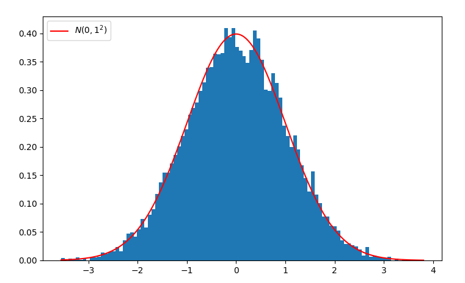
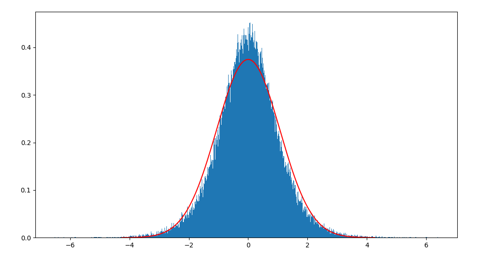
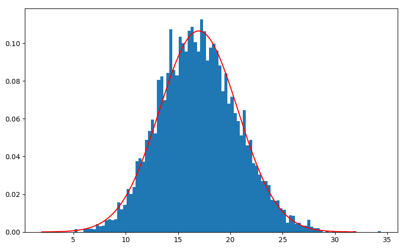

采样（二）：从正态分布采样
计算机程序的运行是确定性的，即每一步都有一个明确的描述，如何在确定性下生成随机的内容？这似乎是个自相矛盾的问题。
事实上，这个怀疑是对的，在没有外部不确定性的输入下，计算机程序永远以确定性的方式运行。为让计算机程序稳定地生成随机内容，需要稳定的不确定性的输入。而这样做的成本非常高。于是，为何不抛开这个直观思路？让计算机生成一些看起来随机的确定性序列。易知，伪随机数有一个非常好的优点，可重复。比如我们再训练神经网络时，要初始化大量参数，伪随机数则可以让我们获得同样的初始化参数，从而避免对此训练。
采样
采样，可以看做是从给定分布中采集样本，也可以看做是从给定数据集，通过某种策略，采集构造新的数据集的方法。本文讲述从均匀分布采样、从指数分布采样、从正态分布、Laplace分布采样等常见分布采样方法。
首先我们谈谈分布变换，即有已知分布的样本集，通过一定的方法使其变换为符合其他分布的样本集。比如，我现在有一个均匀分布生成器，获得一系列样本$x_1, x_2, \dots, x_n \sim U[0, 1]$，那么通过$g(x)$，它如何变换为其他的分布呢？比如变换为正态分布，
这就是分布变换的问题。一般来说，简单的分布容易采样，在获得简单分布的样本后，通过分布变换获得复杂分布的样本。但是对于一般的分布函数，采样方法都不是普遍适用的，因此需要具体分布具体讨论，为每种分布设计最高效的采样方法。
逆变换采样
累积分布函数（CDF）是个单调函数，那么累积分布函数的反函数为，
如果$u \sim U[0, 1]$，那么$F^{-1}(u)$服从累积分布$F(x)$。
证明，
这里有一个细节需要说明，由于$u$采样自均匀分布，因此容易知道$P(u \le y) = y$。这一点是以上推导的关键细节。对于很多分布来说，逆函数$F^{-1}(u)$并不容易计算，因此很多情况下无法直接使用逆变换采样。
注意到，
也就是说，如果获得累积分布为$F(x)$的随机变量$t$，那么$F(t)$为均匀分布。例如$x_i \sim N(0, 1)$，那么标准正态分布的累积分布函数（CDF）$\Phi(x_i)$服从均匀分布。不过$\Phi(x)$无法直接计算，可以使用其近似形式，
于是，对于$x \sim N(0, 1)$代入上式即可获得$U[0, 1]$样本。
正态分布
正态分布的概率密度函数，
均值和方差分别为$\mu$和$\sigma^{2}$。
取 $z=\frac{x-\mu}{\sigma}$ 化成标准正态分布，
如果从标准正态分布采样$u_i$，那么$\mu + u_i \times \sigma$就是均值和方差分别为$\mu$和$\sigma^{2}$的随机变量。
逆变换采样法
计算累计分布函数，
对于一般正态分布也容易得到
然后你会发现其逆$F^{-1}(x)$没那么容易求。scipy这个科学计算库给我们提供了一种实现。Python实践如下，
1 | import numpy as np |
可视化如下，

可以看到采样样本（蓝色部分）和标准正态分布拟合得非常好。
另外一种思路是寻找一个可逆的函数逼近误差函数。注意到$\operatorname{erf}(x)$可以用可逆的函数光滑逼近，
求逆，解得$x$为，
可视化这种采样效果，

可以看到，还是有较大差异。
此外$\operatorname{erf}(x)$还有一个不错的光滑逼近，
这个出发点，然后求$\tanh$的逆，然后解一元三次方程，获得逼近函数的逆，作为$\operatorname{erf}(x)$的逆的近似。
正态分布的CDF无法直接求解反变换函数，但是可以通过一定的技巧绕过这个问题。例如使用 ziggurat 有效地求累积分布函数的逆函数。
Box-Muller 方法
既然$\operatorname{erf}(x)$和$\Phi(x)$的逆变换难求，那么我们对其升维后再试试使用逆变换的思路。这是机器学习的思路：低维无法解决问题，升维来解决。
这里的具体思路是$\Phi(x)$难求逆函数，但是二维$\Phi(x)\Phi(y)$容易求逆函数，获得逆函数后通过逆变换采样得到正态分布的采样公式，这种方法称为Box-Muller方法。
二维的标准正态分布为，
其累积分布函数通过极坐标变换容易求解。这里另，
于是，我们解决$r$与$\cos(\theta),\sin(\theta)$的采样问题即可解决正态分布采样问题。
考虑如下积分计算，
该积分值为1，整体上可以看做是某个随机变量的概率密度函数。根据这个结果，我们使用逆变换思路。对于随机变量$R$，根据以上结果有，
对于指数分布有，
于是，这里把 $r^{2}$ 看作一个整体，$P(r)$ 实质是参数$a = \frac{1}{2}$的指数分布，于是逆变换采样思路有，
也就有$r$的采样方法，
考虑到$\theta$的取值范围为$2\pi u_2$，于是根据$x = r\cos(\theta), y = r \sin(\theta)$，有正态分布采样方法，
生成正态分布任取其中一条公式即可。Box-Muller 方法需要进行三角运算，计算量较大。通过一定的技巧可以把其去掉三角运算。
以上技巧如何逆着来，即可通过正态分布生成器获得均匀分布生成器，$n_1,n_2$独立采样自标准正态分布，那么
服从均匀分布$U[0, 1]$。
修正的 Box-Muller 方法
假设$x \sim U[-1, 1], y \sim U[-1, 1]$，即在矩形上采样$(x, y)$，对于满足$r = x^{2} + y^{2} \le 1$的样本留下，否则丢弃，这样获得的样本$r$满足均匀分布，因为这相当于等可能地落到圆内。这个方法也称为Marsaglia polar method。
于是，$\frac{x}{\sqrt{r}}$可以作为$\cos 2 \pi u_{2}$的替代；$\frac{y}{\sqrt{r}}$可以作为$\sin 2 \pi u_{2}$的替代。
因此有，
修正的 Box-Muller 方法有一个好处是避免进行三角运算，提升计算效率。
中心极限定理思路
中心极限定理表明多个独立统计量（可以具有不同分布）的平均值满足正态分布。以均匀分布为例，这里均匀分布$x_{i} \sim U[0, 1]$，易知均值为$\frac{1}{2}$，方差为$\frac{1}{12}$，从中采样一系列样本$x_1, \dots, x_n$，有
也就有，
以上是对于采样分布均为均匀分布的特殊情况。中心极限定理表明多个具有不同分布独立统计量也满足条件，这里就不进行数学推导了，Python实践编程验证一下。
一下的实现从正态分布、泊松分布、拉普拉斯分布、指数分布等中采样样本，
1 | import numpy as np |
可视化如下，

可以看到采样样本（蓝色部分）和正态分布（红色曲线）拟合得较好。
这种方法不建议工程环境使用：
- 效率低
- 这个思路更多是理论意义，实际计算效率不高
- 正态检验pvalue非常小，不显著
实现
实现更新到：sampling-from-distribution，可能会根据需要持续更新~
总结
本文介绍了一些正态分布采样方法，具体如下：
- Box-Muller
- 修正的Box-Muller
- 接受-拒绝采样
- 累积分布函数的逆或近似逆
此外，还有accept-reject抽样，可以用于复杂形式的概率密度函数的抽样。
参考
[1] https://en.wikipedia.org/wiki/Lehmer_random_number_generator
[2] https://en.wikipedia.org/wiki/Inverse_transform_sampling
[3] https://en.wikipedia.org/wiki/Diehard_tests
转载请包括本文地址：https://allenwind.github.io/blog/10395
更多文章请参考：https://allenwind.github.io/blog/archives/